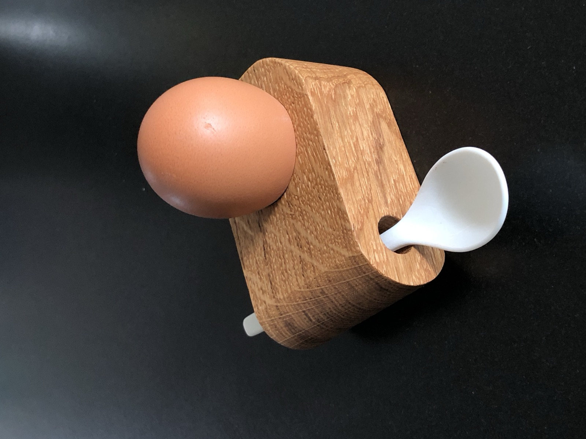
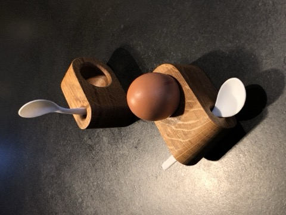
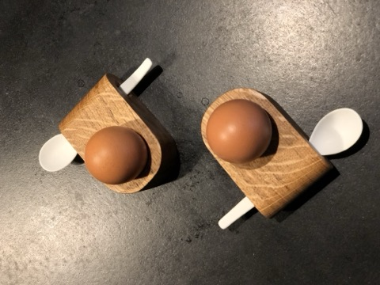
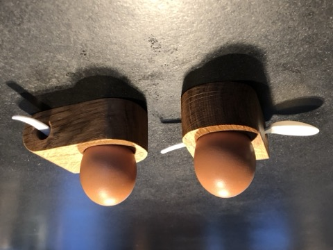
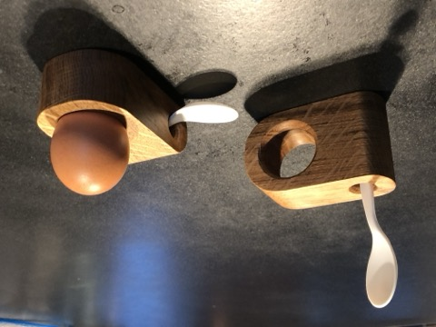
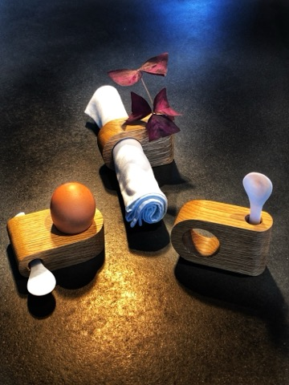
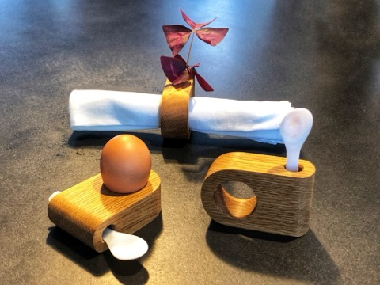

Küchenaccessoires · Handgefertigtes Unikat
14,95 € / Set
Zzgl. Versand. Preis inkl. MwSt.; aufgrund des Kleinunternehmerstatus wird gemäß § 19 UStG die MwSt. in der Rechnung nicht ausgewiesen.
Handgefertigtes Set aus Eierbecher und Löffel: Der Eierbecher besteht aus Eichenholz – nicht lackiert, sondern mit lebensmittelechtem Öl behandelt. Dazu gibt es ein Löffelchen aus geschmacksneutralem Perlmutt der Süßwasser-Muschel.
Multifunktional einsetzbar – auch als Serviettenring oder Blumenhalter macht der Eierbecher eine gute Figur.
Nicht spülmaschinenfest – bitte nur von Hand reinigen und das Holz gelegentlich leicht einölen.
Holz ist ein Naturprodukt: Kleine Lunker, raue Stellen oder Verfärbungen sind keine Qualitätsmängel, sondern Teil des Charakters.